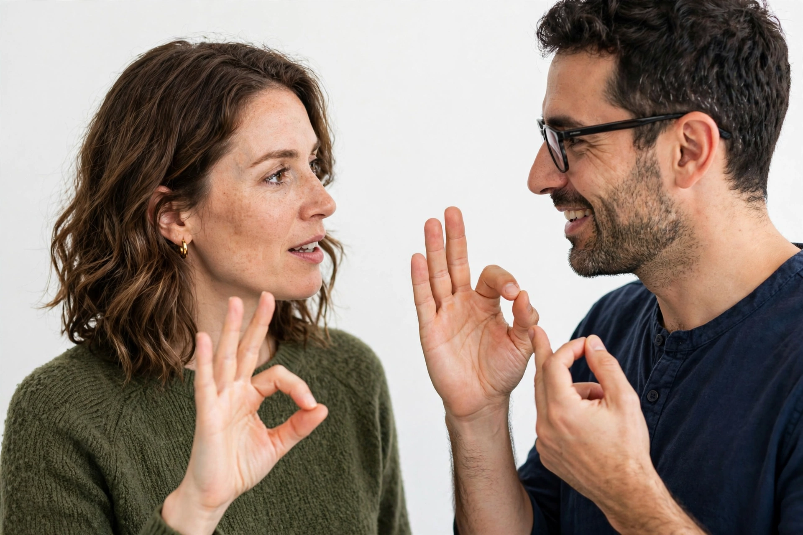

British Sign Language (BSL) is a sign language used in the United Kingdom, the first or preferred language among the Deaf community in the UK. It uses hand shapes, movement, facial expression and body language, with its own grammar distinct from English.

Traced to Thomas Braidwood's school 1760, two-handed alphabet. Related to Auslan and NZSL. Legally recognised language in its own right under British Sign Language Act 2022.
Regional dialects, fingerspelling, mouthing. See Sign language, Deaf culture.